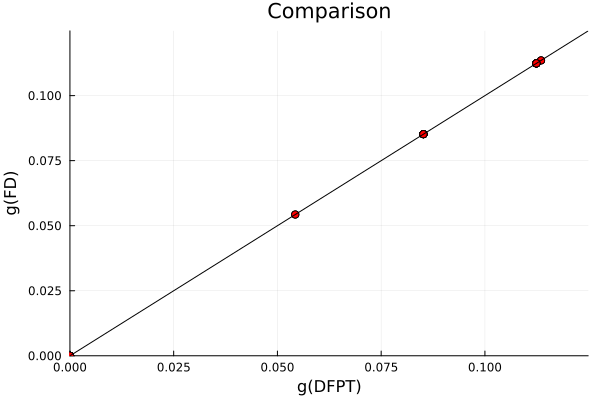
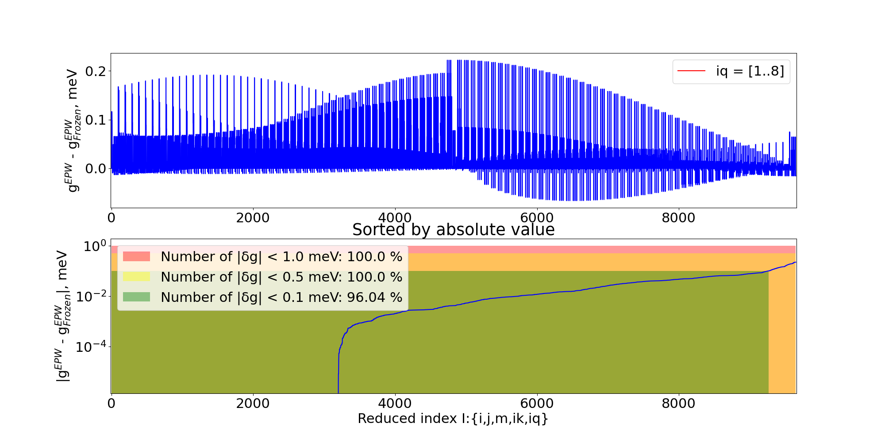
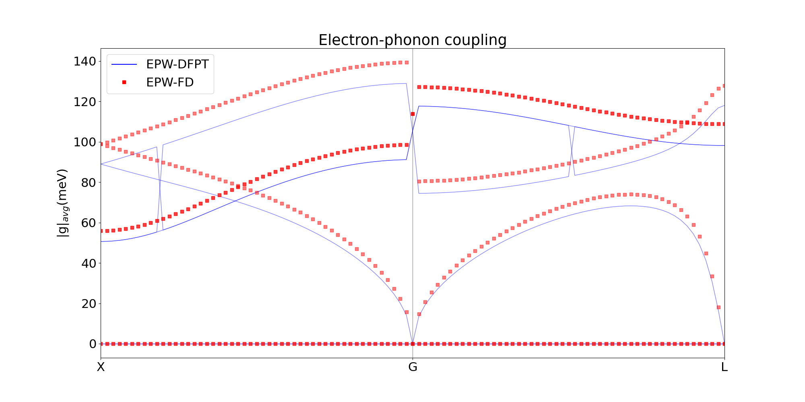

Examples
This example demonstrates the calculation of electron-phonon matrix elements for Silicon on a $\mathbf{k}=\mathbf{q}=2\times2\times2$ grid using the projectability approach with PBE and HSE functionals.
Silicon with PBE
The first step is loading the ElePhAny module together with PythonCall, as we are using the ASE and Phonopy libraries to handle the creation of Quantum Espresso inputs and phonon calculations, respectively.
using ElectronPhonon, PythonCallThen, we need to decide where to create the folder with the corresponding data for the finite difference (FD) calculation. Consider that we set path_to_calc to the same path where the si.jl script for the calculation is located. We expect the following structure of the calculation:
path_to_calc = pwd() * "/".
├── si.jl
├── run.sh
└── displacements
├── dyn_mat
├── epw
├── group_1
...
├── group_12
├── out
├── phonopy_params.yaml
├── phonopy.yaml
├── qpoints.yaml
├── scf_0
└── sc_size.confLet's break it down piece by piece. Inside displacement folder, there are group_* folders that contain input/output of the displaced configurations (scf.in scf.out nscf.in nscf.out) that we need for further post-processing. scf_0 folders contain information about pristine calculation together with *jld2 files that are needed for restarting of the code once the post-processing is partially finished. phonopy_params.yaml and phonopy.yaml qpoints.yaml sc_size.conf contains information related to Phonopy calculation. out folder contains information about electron-phonon elements calculated with DFPT and FD on the coarse-grid for a given ik and iq point per file. epw and dyn_mat folders are needed for further interface with EPW package. If run.sh is also present in the root folder, then subsequent executions of QE are going to be done using Slurm, and run.sh is going to be copied in all the group_* and scf_0 folders.
Now we need to set up additional settings for the FD calculation: abs_disp is the size of the finite displacement which we are going to apply to atoms (Bohr). path_to_qe is an optional path to the Quantum Espresso (QE) source folder, needed only when we want to compare results of FD with DFPT; otherwise, ElePhAny assumes that QE executables are on the path. To access electron-phonon elements, you will need to compile a special version of the ph.x code located in testsuite/non_epw_comp of QE. The following parameter, mpi_ranks, is required for the parallel execution of QE. It is ignored if run.sh is present and calculations are run using Slurm. The use_symm flag corresponds to whether symmetries of displaced configurations are going to be used or every atom of the unit cell is going to be perturbed. At last, sc_size corresponds to the supercell size, which corresponds to the $\mathbf{q}$ grid. k_mesh corresponds to the k-points sampling of the supercells. To have consistency between pristine unit cells and displaced supercells, k-point sampling of the pristine unit cell is a product of $sc\_size \times k\_mesh$.
#Params
abs_disp = 1e-3
path_to_qe= "/home/poliukhin/Soft/sourse/q-e/"
mpi_ranks = 8
use_symm = false
sc_size = [2,2,2]
k_mesh = [1,1,1]The final step in setting up the calculation is to create the QE input file for the pristine system. It is handled by ASE and Phonopy packages, for which we need to provide unitcell and scf_parameters python-like dictionaries.
# Lattice constant of Silicon
a = 5.43052 in Angstrom
unitcell = Dict(
:symbols => pylist(["Si", "Si"]),
:cell => pylist([[-0.5 * a, 0.0, 0.5 * a],
[0.0, 0.5 * a, 0.5 * a],
[-0.5 * a, 0.5 * a, 0.0]]),
:scaled_positions => pylist([(0, 0, 0), (0.75, 0.75, 0.75)]),
:masses => pylist([28.08550, 28.08550])
)
# Set up the calculation parameters as a Python dictionary
scf_parameters = Dict(
:format => "espresso-in",
:kpts => pytuple((k_mesh[1]*sc_size[1], k_mesh[2]*sc_size[2], k_mesh[3]*sc_size[3])),
:calculation =>"scf",
:prefix => "scf",
:outdir => "./tmp/",
:pseudo_dir => "/home/poliukhin/Development/frozen_phonons/elph/example/pseudo",
:ecutwfc => 60,
:conv_thr =>1.e-13,
:pseudopotentials => Dict("Si" => "Si.upf"),
:diagonalization => "ppcg",#david
:mixing_mode => "plain",
:mixing_beta => 0.7,
:crystal_coordinates => true,
:verbosity => "high",
:tstress => false,
:ibrav => 2,
:tprnfor => true,
:nbnd => 4,
:electron_maxstep => 1000
)Once all the settings are set, we can create the model. If use_symm is set to true, the code will analyze and find the minimum amount of displacements that is consistent with Phonopy.
model = create_model(path_to_calc = path_to_calc,
abs_disp = abs_disp,
path_to_qe = path_to_qe,
mpi_ranks = mpi_ranks,
sc_size = sc_size,
k_mesh = k_mesh,
unitcell = unitcell,
scf_parameters = scf_parameters,
use_symm = use_symm);Running code
Once all the preparation is complete, all subsequent functions will operate directly with the model object. First, we could create the displaced configurations and run related DFT calculations.
create_disp_calc!(model; from_scratch = from_scratch)
run_calculations(model)If the calculations are run on the cluster and run.sh is present in the root directory, the calculations must be run sequentially, as run_calculations(model) is designed to execute both SCF and NSCF calculations. In this case, use the following functions, running them one by one (scf pristine and displaced, nscf pristine, nscf displaced):
create_disp_calc!(model; from_scratch = from_scratch)
run_disp_calc(model)
run_nscf_calc(model)
run_disp_nscf_calc(model)Once all the calculations are done, we could post-process the results. The prepare_model function will unfold pristine wave functions to the supercell and save them in the binary '*jld2' format for further post-processing. It will also call Phonopy to create a diagonal force constant matrix to access phonon data. After this, the create_electrons and create_phonons functions will create and save data for the final electron-phonon matrix element calculations. To save space and computational time create_electrons will save braket matixes beetween displaced and undisplaced wave-functions $U^{\pm}_{jn\mathbf{k}} = \langle \psi^{\pm}_{j} \mid \psi_{n\mathbf{k}} \rangle$ instead of wave functions itself.
prepare_model(model)
electrons = create_electrons(model)
phonons = create_phonons(model)If the electrons and phonons objects were already created before, we could take advantage of the loading functions and not recalculate $U^{\pm}_{jn\mathbf{k}}$ matrices.
electrons = load_electrons(model)
phonons = load_phonons(model)Since part of this code allows manipulating wave functions that QE saves in binary or HDF5 format, it is helpful to present some examples. Considering that we have QE calculation with tmp/scf.save/ folder, which contains several wave functions wfc*.dat or wfc*.hdf5, we could read them directly in Julia.
miller, psi_list = parse_wf("./tmp/scf.save/wfc1")QE saves wave function in reciprocal space $\psi_{n\mathbf{k}}(\mathbf{r}) = \sum_{G}\psi_{n\mathbf{k}}(\mathbf{G}) e^{i(\mathbf{G} +\mathbf{k})\mathbf{r}}$, where psi_list is a list of wave functions coefficient for every band with $N_{\mathbf{G}}$ coefficients per band that coresponds to $\psi_{n\mathbf{k}}(\mathbf{G})$. miller is matrix $3 \times N_{\mathbf{G}}$ that allows to resonstruct the $\mathbf{G}$ vector of coresponding plane wave coefficient $\psi_{n\mathbf{k}}(\mathbf{G})$ by using (read more about wave functions in QE on Gitlab Wiki page):
\[\mathbf{G}[i, j, k] = \text{miller}[1,i] \mathbf{b}_1 + \text{miller}[2,i] \mathbf{b}_2 + \text{miller}[3,i] \mathbf{b}_3\]
Having access to wave function coefficients and Miller indices, we could easily transform the wave function to real or reciprocal space as well as calculate brackets between them.
N_fft = determine_fft_grid("./tmp/scf.save/data-file-schema.xml"; use_xml=true)
psi_list_R = [wf_from_G(miller, psi_G, N_fft) for psi_G in psi_list]
psi_list_G = [wf_to_G(miller, psi_R, N_fft) for psi_R in psi_list_R]
braket_G = calculate_braket(psi_list_G[1],psi_list_G[2])
braket_R = calculate_braket_real(psi_list_R[2], psi_list_R[2])Now, the final part of the calculation is the construction of the electron-phonon matrix for every k and q points of interest. electron_phonon_qe function will try to calculate electron-phonon matrix elements directly in QE so that comparison between DFPT and FD could be made (provided a special version of ph.x is compiled). plot_ep_coupling allows simple visualization of the output quantities.
# Electron-phonon matrix elements
ik_list = [i for i in 1:prod(k_mesh*sc_size)]
iq_list = [i for i in 1:prod(k_mesh*sc_size)]
for ik in ik_list
for iq in iq_list
electron_phonon_qe(model, ik, iq)# requires to compile special ph.x in testsuite/non_epw_comp
electron_phonon(model, ik, iq, electrons, phonons;) #save_epw = true
plot_ep_coupling(model, ik, iq)
end
endInspecting the out folder, we could find the resulting comparison of electron-phonon matrix elements. For example for ik = 1, iq = 2, we see that FD and DFPT mathes perfectly 😎:

Interface with EPW
This section provides an interface to the EPW software. Since the usage of it is not very smooth and EPW developers are moving to storing data in HDF5 files, stay tuned for an improved version of the interface that does not require an explicit call to the Python script.
To run this section of the example we need to run part of the script that constructs electron-phonon matrix element, this time without explicit comparison with DFPT and adding aditional flag that saves data readable by EPW:
electron_phonon(model, ik, iq, electrons, phonons; save_epw = true)Having access to the electron-phonon matrix elements on the coarse grid, it is easy to build an interface with the relevant code that could obtain electron-phonon related properties. We are going with EPW code for this matter since it has a straightforward interface to the QE package. Continuing the example where we created displacements folder in the same place where we have the execution script, we will add a few additional files in the root folder.
touch ph.in
touch epw0.in
touch epw1.in
touch epw2.in
touch path_k.kpt
touch path_q.kpt
touch run.sh!ph.in
&inputph
recover=.false.
tr2_ph=1.0d-17,
prefix='si',
amass(1)=28.0855,
outdir='./',
fildyn='si.dyn.xml',
fildvscf='dvscf'
ldisp=.true.,
nq1 = 2,
nq2 = 2,
nq3 = 2
/!epw0.in
&inputepw
prefix = 'si'
amass(1) = 28.0855,
outdir = './'
dvscf_dir = './save/'
elph = .true.
epbwrite = .true.
epbread = .false.
epwwrite = .true.
epwread = .false.
use_ws = .true.
nbndsub = 4
wannierize = .true.
num_iter = 50000
iprint = 2
proj(1) = 'f=0,0,0:sp3'
nkf1 = 1
nkf2 = 1
nkf3 = 1
nqf1 = 1
nqf2 = 1
nqf3 = 1
nk1 = 2
nk2 = 2
nk3 = 2
nq1 = 2
nq2 = 2
nq3 = 2
/!epw1.in
--
&inputepw
prefix = 'si'
amass(1) = 28.0855,
outdir = './'
dvscf_dir = './save/'
elph = .true.
epbwrite = .false.
epbread = .true.
epwwrite = .true.
epwread = .false.
use_ws = .true.
nbndsub = 4
wannierize = .false.
num_iter = 50000
iprint = 2
proj(1) = 'f=0,0,0:sp3'
prtgkk = .true.
band_plot = .false.
filkf = 'path_k.kpt'
filqf = 'path_q.kpt'
nk1 = 2
nk2 = 2
nk3 = 2
nq1 = 2
nq2 = 2
nq3 = 2
/!epw2.in
&inputepw
prefix = 'si'
amass(1) = 28.0855,
outdir = './'
dvscf_dir = './save/'
elph = .true.
epbwrite = .false.
epbread = .true.
epwwrite = .true.
epwread = .false.
use_ws = .true.
nbndsub = 4
wannierize = .true.
num_iter = 50000
iprint = 2
proj(1) = 'f=0,0,0:sp3'
prtgkk = .true.
band_plot = .false.
filkf = 'path_k.kpt'
filqf = 'path_q.kpt'
nk1 = 2
nk2 = 2
nk3 = 2
nq1 = 2
nq2 = 2
nq3 = 2
/!path_k.kpt
1 cartesian
0.0000000000 0.0000000000 0.0000000000 1.0!path_q.kpt
101 cartesian
1.0000000000 0.000000000 0.000000000 1.0
0.9800000000 0.000000000 0.000000000 1.0
0.9600000000 0.000000000 0.000000000 1.0
0.9400000000 0.000000000 0.000000000 1.0
0.9200000000 0.000000000 0.000000000 1.0
0.9000000000 0.000000000 0.000000000 1.0
0.8800000000 0.000000000 0.000000000 1.0
0.8600000000 0.000000000 0.000000000 1.0
0.8400000000 0.000000000 0.000000000 1.0
0.8200000000 0.000000000 0.000000000 1.0
0.8000000000 0.000000000 0.000000000 1.0
0.7800000000 0.000000000 0.000000000 1.0
0.7600000000 0.000000000 0.000000000 1.0
0.7400000000 0.000000000 0.000000000 1.0
0.7200000000 0.000000000 0.000000000 1.0
0.7000000000 0.000000000 0.000000000 1.0
0.6800000000 0.000000000 0.000000000 1.0
0.6600000000 0.000000000 0.000000000 1.0
0.6400000000 0.000000000 0.000000000 1.0
0.6200000000 0.000000000 0.000000000 1.0
0.6000000000 0.000000000 0.000000000 1.0
0.5800000000 0.000000000 0.000000000 1.0
0.5600000000 0.000000000 0.000000000 1.0
0.5400000000 0.000000000 0.000000000 1.0
0.5200000000 0.000000000 0.000000000 1.0
0.5000000000 0.000000000 0.000000000 1.0
0.4800000000 0.000000000 0.000000000 1.0
0.4600000000 0.000000000 0.000000000 1.0
0.4400000000 0.000000000 0.000000000 1.0
0.4200000000 0.000000000 0.000000000 1.0
0.4000000000 0.000000000 0.000000000 1.0
0.3800000000 0.000000000 0.000000000 1.0
0.3600000000 0.000000000 0.000000000 1.0
0.3400000000 0.000000000 0.000000000 1.0
0.3200000000 0.000000000 0.000000000 1.0
0.3000000000 0.000000000 0.000000000 1.0
0.2800000000 0.000000000 0.000000000 1.0
0.2600000000 0.000000000 0.000000000 1.0
0.2400000000 0.000000000 0.000000000 1.0
0.2200000000 0.000000000 0.000000000 1.0
0.2000000000 0.000000000 0.000000000 1.0
0.1800000000 0.000000000 0.000000000 1.0
0.1600000000 0.000000000 0.000000000 1.0
0.1400000000 0.000000000 0.000000000 1.0
0.1200000000 0.000000000 0.000000000 1.0
0.1000000000 0.000000000 0.000000000 1.0
0.0800000000 0.000000000 0.000000000 1.0
0.0600000000 0.000000000 0.000000000 1.0
0.0400000000 0.000000000 0.000000000 1.0
0.0200000000 0.000000000 0.000000000 1.0
0.0000000000 0.000000000 0.000000000 1.0
-0.0100000000 0.0100000000 0.0100000000 1.0
-0.0200000000 0.0200000000 0.0200000000 1.0
-0.0300000000 0.0300000000 0.0300000000 1.0
-0.0400000000 0.0400000000 0.0400000000 1.0
-0.0500000000 0.0500000000 0.0500000000 1.0
-0.0600000000 0.0600000000 0.0600000000 1.0
-0.0700000000 0.0700000000 0.0700000000 1.0
-0.0800000000 0.0800000000 0.0800000000 1.0
-0.0900000000 0.0900000000 0.0900000000 1.0
-0.1000000000 0.1000000000 0.1000000000 1.0
-0.1100000000 0.1100000000 0.1100000000 1.0
-0.1200000000 0.1200000000 0.1200000000 1.0
-0.1300000000 0.1300000000 0.1300000000 1.0
-0.1400000000 0.1400000000 0.1400000000 1.0
-0.1500000000 0.1500000000 0.1500000000 1.0
-0.1600000000 0.1600000000 0.1600000000 1.0
-0.1700000000 0.1700000000 0.1700000000 1.0
-0.1800000000 0.1800000000 0.1800000000 1.0
-0.1900000000 0.1900000000 0.1900000000 1.0
-0.2000000000 0.2000000000 0.2000000000 1.0
-0.2100000000 0.2100000000 0.2100000000 1.0
-0.2200000000 0.2200000000 0.2200000000 1.0
-0.2300000000 0.2300000000 0.2300000000 1.0
-0.2400000000 0.2400000000 0.2400000000 1.0
-0.2500000000 0.2500000000 0.2500000000 1.0
-0.2600000000 0.2600000000 0.2600000000 1.0
-0.2700000000 0.2700000000 0.2700000000 1.0
-0.2800000000 0.2800000000 0.2800000000 1.0
-0.2900000000 0.2900000000 0.2900000000 1.0
-0.3000000000 0.3000000000 0.3000000000 1.0
-0.3100000000 0.3100000000 0.3100000000 1.0
-0.3200000000 0.3200000000 0.3200000000 1.0
-0.3300000000 0.3300000000 0.3300000000 1.0
-0.3400000000 0.3400000000 0.3400000000 1.0
-0.3500000000 0.3500000000 0.3500000000 1.0
-0.3600000000 0.3600000000 0.3600000000 1.0
-0.3700000000 0.3700000000 0.3700000000 1.0
-0.3800000000 0.3800000000 0.3800000000 1.0
-0.3900000000 0.3900000000 0.3900000000 1.0
-0.4000000000 0.4000000000 0.4000000000 1.0
-0.4100000000 0.4100000000 0.4100000000 1.0
-0.4200000000 0.4200000000 0.4200000000 1.0
-0.4300000000 0.4300000000 0.4300000000 1.0
-0.4400000000 0.4400000000 0.4400000000 1.0
-0.4500000000 0.4500000000 0.4500000000 1.0
-0.4600000000 0.4600000000 0.4600000000 1.0
-0.4700000000 0.4700000000 0.4700000000 1.0
-0.4800000000 0.4800000000 0.4800000000 1.0
-0.4900000000 0.4900000000 0.4900000000 1.0
-0.5000000000 0.5000000000 0.5000000000 1.0 #run.sh
#!/bin/bash
export QE_PATH="/home/poliukhin/Soft/sourse/q-e/bin/"
export NMPI=8
export NPOOL=8
export PARA_PREFIX="mpirun"
export ELEPHANY_PATH="/home/poliukhin/Development/ElectronPhonon/"
copy data ....
cp -r ./displacements/scf_0/tmp/scf.save ./si.save
cp -r ./displacements/scf_0/scf.out ./
echo "0, copy finished finished"
$PARA_PREFIX -n $NMPI $QE_PATH/pw.x -npool $NPOOL -in nscf.in > nscf.out
echo "2, nscf finished"
$PARA_PREFIX -n $NMPI $QE_PATH/ph.x -npool $NPOOL -in ph.in > ph.out
echo "1, ph finished"
python3 /home/poliukhin/Soft/q-e/EPW/bin/pp.py << EOF
si
EOF
echo "2, pp.py finished"
epw.x -in epw0.in > epw0.out
echo "3, epw0 finished"
$QE_PATH/epw.x -in epw1.in > epw1.out
echo "4, epw1 finished"
cp -r si.save/ si_dft.save/
cp si.epb1 si_dft.save/
python $ELEPHANY_PATH/epw/parse_epb.py
python $ELEPHANY_PATH/epw/fake2nscf.py
$QE_PATH/epw.x < epw2.in > epw2.out
echo "4, epw2 finished"For the additional explanation of different options of EPW, consult the documentation. For the scf and nscf calculations, we are reusing data from the displacements/scf_0 folder. After copying the ground state calculation, we are performing phonon calculations using the ph.in input file. After converting data to the EPW readable format using the pp.py script, we run epw0.in, which creates a si.epb file containing all the essential data related to the electron-phonon calculation. This is the file that we will modify using the parse_epb.py script. The script allows parsing of a Fortran binary file and modifying related electron eigenvalues, phonon dynamical matrices, and electron-phonon matrix elements in the Kohn-Sham basis (without multiplying by the phonon eigenvector). The important caveat here is that the electron-phonon matrix is not gauge invariant, which means that we have to carry initial wave functions that were used to create the matrix to be consistent with Wannier interpolation. For this, the second script fake2nscf.py is used to copy wavefunctions and eigenvalues that were obtained with any functional to the format QE could read. These scripts are the temporary solutions to the interface and are located in the epw folder of the source code.
After successfully parsing the electron-phonon matrix and modifying the wavefunction, we can rerun EPW using epw2.in, which will read the modified EPW files, perform wannierization, and then calculate interpolated quantities. To compare the results between DFPT and FD, we could use compare_epw.py.
python $ELEPHANY_PATH/epw/compare_epw.py
Silicon with Hybrids
Since the proposed approach can be straightforwardly applied to any functional of interest, we could perform the same calculation, for example, for the Hybrid functional. In QE, we could do it by just adding a few additional parameters and following the rest of the example.
scf_parameters_hse = Dict(
:input_dft => "HSE",
:nqx1 => 1,
:nqx2 => 1,
:nqx3 => 1
)
merge!(scf_parameters, scf_parameters_hse)In case any other method beyond DFT is of interest, one could intervene after the electrons and phonons object is created and change the corresponding eigenvalues and eigenvectors. By following the same calculation as the previous step, we can gain access to the electron-phonon coupling with the HSE functional. To plot electron-phonon coupling along the path specified in path_k.kpt and path_q.kpt files, use the plot_epw.py script.
python $ELEPHANY_PATH/epw/plot_epw.py
On this plot, FD is obtained using the HSE functional, which is inaccessible to standard DFPT 💥. As we can see, more complex functionals tend to increase the coupling, which, in the case of e.g., transport, would lower the carried drift mobility. See more arXiv prepaper for more details on this. Also, take a look at the example folder for more examples (e.g., GaAs) and stay tuned for new features in the future!